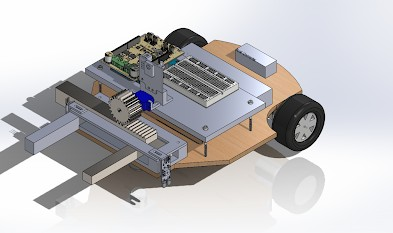
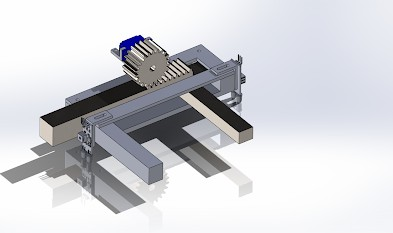

Autonomous Rover
Design Report
Final Presentation
The Rover
Our rover design features a gripper, drive train, sensors, and electronics all connected by a wooden chassis. The gripper, situated at the front, is designed to grab objects detected by the PixyCam. The drivetrain, at the rear, controls the direction and speed of the rover using a 2-wheel steering mechanism. Components like the Arduino, breadboard, and motor shield are conveniently placed on a raised platform for easy adjustment. The battery, positioned at the back for stability, is attached via velcro straps, while the buck converter is secured with screws. Other components like the ESC, On/Off switch, and receiver are affixed with double-sided tape for simplicity. IR sensors at the front aid in line detection, while the PixyCam, centered and elevated, enhances object detection beyond the gripper's reach.
We opted for 65 mm wheels for smooth movement and fine adjustment of the drivetrain. The overall dimensions meet size requirements at 12.54 inches by 10 inches.

Gripper
For the gripper, we utilized a 3D-printed design with a rack and pinion system for precise movement. Mounted at the front, it provides a 4-inch opening and closes to 1.6 inches to grasp objects up to 2.5 inches away.

Drivetrain
The drivetrain, powered by two motors, allows for forward and backward motion. Steering is achieved by adjusting motor speed, guided by IR sensors and the PixyCam. Mounted strategically, these sensors aid in early detection and accurate steering towards detected objects.
Build Video
The rover throughout the production process.